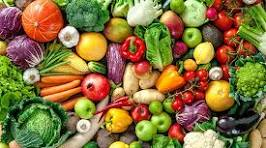

LOGOTIPO
PRECENTACION
PROYECCION PARA EL PUESTOTITULO
REQUISITOS PARA TRAVAJAR EN UNA FRUTERIADESCRIPCION
El mercado mundial de frutas y verduras desempeña un papel crucial en la seguridad alimentaria mundial, ya que proporciona productos variados y nutritivos a una población en aumento. Es una fuente importante de ingresos para los agricultores y apoya las economías rurales de todo el mundo.IMAGEN
PRODUCTO
IMAGEN
VIDEOS
PROMOCIONES
Ofertas en frutas, verduras y otros productos del Martes de Frescura de Walmart hoy 11 de marzo de 2025PIE DE PAGINA
esta pagina es creado por el colegio de bachilleres plantel 28 bachajon , incluye; la venta de frutas de buena calidad y precios bajos que incluye promociones